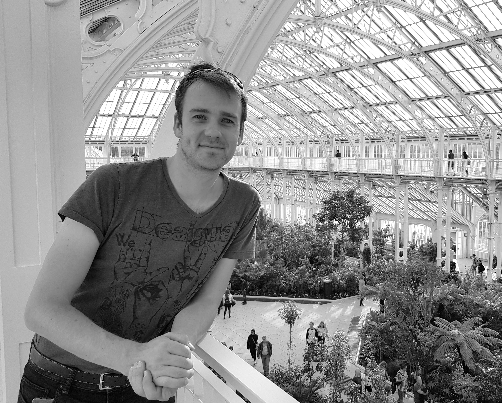

How I can help
My services
Available from June 2026, I can join your project as Staff Engineer, Lead Developer or Senior Developer for a feature team.
Experienced in scaling engineering teams, driving architecture decisions, and spreading a shared technical culture through DDD, TDD and Software Craftsmanship.
Based in Saint-Germain-en-Laye, open to hybrid work across Île-de-France.
Linkedin profile
React & TypeScript Front-end
development
Specialized in React since 2017, now with TypeScript as a first-class citizen. I work with Redux Toolkit, React hooks, React Router, Styled components, Jest & testing-library. Experience includes IoT kiosk UIs (state machine architecture) and large e-commerce platforms.
NodeJS Back-end
development
After many years developing backends in .NET I moved to Javascript in 2017 and enjoy using NodeJS & Express to build back-end services. I deal with data storage in SQL, no-SQL and/or Kafka. I'm used to deploying services in Docker containers in Kubernetes.
REST or GraphQL
API Design
I've designed many APIs in REST and recently GraphQL. REST APIs are still the main way to expose your services to your frontend but I really fell in love with GraphQL in 2018 for its power and flexibility. It's now my favourite way to expose any large enterprise API.
Software
architecture
Experienced across multiple architectural styles: hexagonal architecture, micro-services, event sourcing, state machines and DDD. I choose the right architecture for the right context — from a critical medical system (Stago, team of 30) to an IoT kiosk platform (BIBAK) to large e-commerce (Just Eat, Trainline).
Scrum
methodology
I've been working in Scrum teams since 2011. In 2015/2016 I passed the 'Scrum Developer' and 'Scrum master' Certification with Scrum.org. I know how Scrum can help and when we should invent our own processes. But Scrum is just the tip of the iceberg of good development practices.
Leading &
Mentoring
Helped grow the engineering team at BIBAK from a handful of developers to 10, structuring two sub-teams. Previously led a team of 5 full-stack developers in London (FindMyPast). Coaching focuses on DDD, Software Craftsmanship, career 1:1s and shared technical culture.
Working in
English
French native speaker. Lived and worked in London from 2017 to 2020 (Trainline, Just Eat, FindMyPast, SkillsMap), fully immersed in English-speaking teams. Comfortable writing documentation, leading meetings, running one-to-ones and giving presentations in English.
Engineer
background
I graduated from an engineer school in Paris (ESIEE Paris) in 2002. It's a generalist engineer school where I chose to specialise in computer science. I studied mathematics, physics, algorithmic, networking and computer architecture,
DDD &
Software Craftsmanship
I drive Domain-Driven Design adoption across technical and product teams — shared ubiquitous language, bounded contexts, cleaner code. Daily advocate for TDD, pair programming, continuous refactoring and meaningful code reviews as core engineering practices.
And always
passionate
Year after year, what I love most is developing software in teams, proposing good software design, improving development processes, solving complex problems, learning and teaching new concepts and technologies.
Julien struck me as someone proposing good software designs, often with original ideas that he was able to make the case for, which triggered interesting debate among developers. He always adjusted fast to changes in projects and technologies.
Julien Zaegel
Department manager at Stago
Working with Julien has been an absolute pleasure. He is knowledgeable in many different areas and has a very good approach to dealing with problems. Besides all of the above, he has a great personality and that makes him a great player for any team.
Ilke CAN
Back end Software Engineer
Julien is a really good developer and architect, he has a lot to bring to a team. He is very knowledgeable and always has good suggestions for improvements, either technically or in the development processes. It was a nice experience working with him.
Jérémie Yardin
Front-end Lead Dev
Julien can work on every element of a project, from the Build, to the Back-end and the GUI. He is always looking to improve the processes and the code quality. He always delivered quality code on time, while being autonomous and communicating well with the rest of the team.
Thomas Radioyes
Software Architect
Julien is bright, passionate, hard-working, and possesses great interpersonal capabilities; always willing to learn and share his findings with others. His dynamism and high technical level made him an asset to solve complex problems as a team.
Mouraf Chibane
Software Architect
I'm based in
Saint-Germain-en-Laye (Suburbs West of Paris)